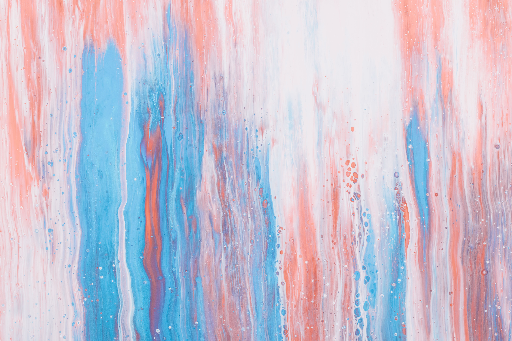

ART GALLERY
showcasing the best works of art
our artists
A Few Words About Us
Our Gallery offers you a qualitatively different approach to the usual practice
in the field of art trade. We have a decent selection of options for exclusive author's gifts of different
directions and price categories. Along with painting, graphics, sculpture, in our Gallery you will find a wide
range of designer interior decoration items. We will be happy to help you create an individual proposal within
the allocated budget.
"Art Gallery" organizes not only exhibitions of popular artists of Belarus, but also periodically opens new
names in contemporary art.
Press About Us
Like any living organism, the museum is constantly growing, replenishing its
funds. The collection of Belarusian and Russian art, Western European art, the art of the countries of the
East, contemporary Belarusian art now numbers more than 30 thousand works.
A museum is not only paintings, it is also people, thanks to whose efforts in different periods of history new
expositions are created, exhibitions are organized, books and catalogs are published, works of art are
replenished, stored, researched, restored and promoted. Now the staff of the museum numbers about three
hundred people who adequately continue the traditions of their senior museum colleagues.
A Little More About Us
Our Prices
Acrylic
$95
Acrylic paintings are the most popular among our artists, their clients, and
our gallery visitors. This type of paintings is safe for your health and is less affected by heat, while
expressing a vast range of colours.
Oil
$55
Being a basic painting material for artists since ancient times, oil provides
great possibilities even today. Its transparency, opacity, and translucency allow to create the most
captivating color fusions.
Mixed Technique
$15
A mixed media painting is one which combines different painting and
drawing materials and methods, rather than only one medium. Such artworks are becoming more popular due to
artists’ intense creativity.
Testimonials
View all
Great atmosphere and lots ov impressive paintings
My friends is an connoisseur, so she brought me here and I`m amazed.
I got to see so many different types of beautiful art in one place, so I`m thrilled and i feel like Art
Gallery helps me develop my taste for art. I think it`s nice that there`s a big range of prices and I`m
considering buying a painting here.